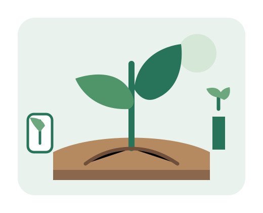

Mais cuidado com a água. Mais força para cultivar.
RAIZ conecta tecnologia e cultivo para apoiar decisões conscientes sobre a irrigação.
Conheça a solução

Problema
Pequenos produtores e cultivadores enfrentam dificuldades para identificar a umidade ideal do solo.
A irrigação sem informação pode desperdiçar água, prejudicar plantações e aumentar custos.
Parágrafos: 13 e 12 palavras.
Tecnologia
Um sensor acompanha a umidade do solo; a simulação no Wokwi representa a leitura.
Um aplicativo em Python interpreta os dados, enquanto esta página apresenta a proposta.
Parágrafos: 14 e 13 palavras.
Objetivos
Monitorar a umidade do solo e indicar momentos adequados para irrigar.
Reduzir desperdícios e apoiar decisões de cultivo com dados simples e acessíveis.
Parágrafos: 11 e 12 palavras.
Público-alvo
A proposta atende pequenos produtores, agricultores familiares e pessoas que cultivam em espaços comunitários.
O foco está em contextos com recursos limitados e necessidade de economizar água.
Parágrafos: 14 e 13 palavras.
Benefícios
A solução busca economizar água e apoiar a produção de alimentos com monitoramento acessível.
Conecta-se aos ODS 2, 13, 9 e 10, promovendo agricultura, clima, inovação e inclusão.
Parágrafos: 14 e 14 palavras.